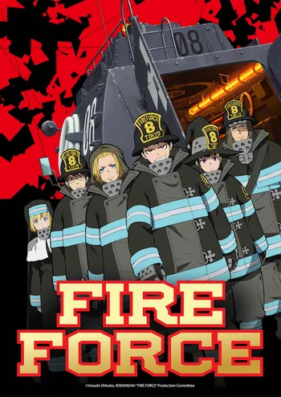
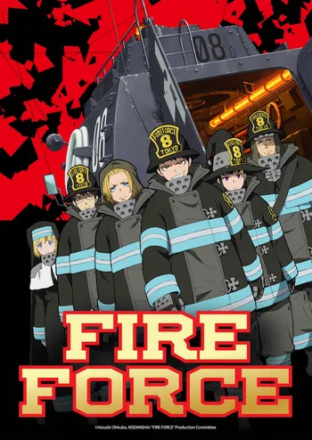

Fire Force
The Great Cataclysm is an event that happened two hundred and fifty years ago, 50 years before the Solar year 0. During it, the world was set on fire, and many nations were wiped out with very few habitable areas left in the aftermath. The survivors took refuge in the Tokyo Empire, which remained mostly stable during the period despite losing some of its landmass. The Tokyo Emperor Raffles I establishes the faith of the Holy Sol Temple as it and Haijima Industries developed the perpetual thermal energy plant Amaterasu to power the country.
Year 198 of Tokyo's Solar Era, special fire brigades called the Fire Force fight increasing incidents of spontaneous human combustion where human beings are turned into living infernos called "Infernals". While the Infernals are first generation cases of spontaneous human combustion, with more powerful horned variations known as Demons, later generations possess pyrokinesis while retaining human form. The Fire Force was formed by combining people with these powers from the Holy Sol Temple, The Tokyo Armed Forces, and the Fire Defense Agency, and is composed of eight independent companies.
Shinra Kusakabe is a third generation pyrokinetic youth who gained the nickname "Devil's Footprints" for his ability to ignite his feet at will, and was ostracized as a child for the fire that killed his mother and younger brother Sho twelve years ago. He joins Special Fire Force Company 8, which features other pyrokinetics who dedicated themselves to ending the Infernal attacks for good while investigating Companies 1 through 7 for potential corruption in their ranks. Shinra begins to learn that the fire that killed his mother was a cover for Sho to be taken by the White Clad, a doomsday cult behind the Infernal attacks with agents within the facets of the Tokyo Empire. Company 8 and their allies oppose the White Clad while learning of their goal to gather eight individuals like Shinra and Sho to repeat the Great Cataclysm for an ancient being who manipulated humanity for that very purpose.
 
